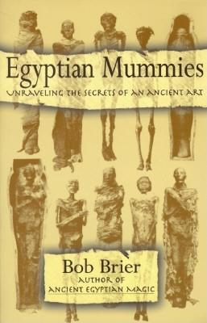

NANOBook Store
THE ART OF ANCIENT EGYPT

click on to go to pdf!
The artworks of ancient Egypt have fascinated people for thousands of years. The early Greek and later Roman artists were influenced by Egyptian techniques and their art would inspire those of other cultures up to the present day. Many artists are known from later periods but those of Egypt are completely anonymous and for a very interesting reason: their art was functional and created for a practical purpose whereas later art was intended for aesthetic pleasure. Functional art is work-made-for-hire, belonging to the individual who commissioned it, while art created for pleasure - even if commissioned - allows for greater expression of the artist's vision and so recognition of an individual artist.
The Art of Ancient Egypt, author West Jefferson Local Schools Home, by Philippe de Montebello
read more about the novel....
EGYPTION MUMMIES

click on to go to pdf!
The methods of embalming, or treating the dead body, that the ancient Egyptians used is called mummification.
Using special processes, the Egyptians removed all moisture from the body , leaving only a dried form that
would not easily decay. It was important in their religion to preserve the dead body in as life-like a manner
as possible. So successful were they that today we can view the mummified body of an Egyptian and have a good
idea of what he or she looked like in life, 3000 years ago.
EGYPTION MUMMIES,author Carol Andrews,2008
read more about the book....